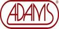
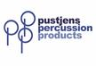
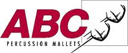

Percussive Arts Society
PAS Chapter Niederlande
Michel Mordant is President of Niederlande Chapter of the Percussive Arts Society und co-host of the Day of Percussion, the national Schlagzeug day of Niederlande. Chapter community Seite
The chapter
Board und team
- Board membersMarcel van Vught, Paul Bouten und Michel Mordant
- Chair, PaukenBert Flas
- EnthusiastsHans Beurskens, Bob Martens
Day of Percussion
All editions
- 10th Day of Percussion — 2023, Sittard
- 2022 — other chapter activities
- 10th Day of Percussion — 2020, Eindhoven (cancelled: corona)
- 9th Day of Percussion — 2018, Zwolle
- 8th Day of Percussion — 2015, Thorn
- 7th Day of Percussion — 2012, Den Haag
- 6th Day of Percussion — 2011, Kerkrade (PDF)
- 5th Day of Percussion — 2010, Codarts Rotterdam (PDF)
- 4th Day of Percussion — 2009, Vught (PDF)
- 3rd Day of Percussion — 2008, Tilburg (PDF)
- 2nd Day of Percussion — 2007, Voerendaal (PDF)
- 1st Day of Percussion — 2006, Maastricht (PDF)
22. Oktober 2023 · Sittard
Day of Percussion 2023
Presented by Percussion Friends und the Percussive Arts Society: the 10th Dutch Schlagzeug Day (Nederlandse Slagwerkdag), 10.00–22.00, at Gemeenschapshuis Broeksittard, Dorpstraat 1, 6137 SR Sittard. Free admission, mit Workshops by Ramon Lormans, Maikel Claessens und Georgi Tsenov; performances by drum bands und Schlagzeug groups from Sittard und the surrounding area und the Musikschule Eschweiler; closing Konzert by Mallet Collective. Musical hosts: Fanfare St. Caecilia und Michel Mordant.


2022
Chapter activities 2022
In 2022 there were no chapter concerts such as a Day of Percussion. The chapter was present at the World Music Contest in Kerkrade mit promotional material, membership forms und other PAS material:
- 9. Juli — Percussion Contest, Theatre Kerkrade
- 23.–24. Juli — March und Show Wettbewerb, Parkstad Limburg Stadion (Roda JC)
- 30.–31. Juli — March und Show Wettbewerb, Parkstad Limburg Stadion (Roda JC)
Chapter log und reporting forms 2022
Activity, business und financial reports submitted to PAS for 2022 (no PAS members in attendance were registered).


Announcement — PAS Day of Percussion 2023:
29. März 2020 · Eindhoven
Day of Percussion 2020
The 10th Dutch Schlagzeug Day was planned for 29. März 2020, 10.00–18.00, at Fontys Sporthogeschool, Theo Koomenlaan 3, 5644 HZ Eindhoven — und was cancelled because of the corona pandemic.
Planned performers: Alex Jacobowitz, Tatiana Koleva, und the Eric Aalbers Schlagzeugensemble conducted by Paul Doom. Musical hosts: Jelle Roeper und Michel Mordant. CGN United
Sponsors


10. März 2018 · Zwolle
Day of Percussion 2018
9th Dutch Schlagzeug Day, 10.00–18.00, at ArtEZ, Aan de Stadsmuur 88, 8011 VD Zwolle.
Mit Niek Kleinjan, Traditional Collective Drum Corps, Jan Wolfkamp, Wim de Vries und others, including KTK und Koen Herfst. Musical hosts: Peter Berk und Michel Mordant.
Sponsors


7. März 2015 · Ittervoort
Day of Percussion 2015
8th Dutch Schlagzeug Day, 10.00–18.00, at Muziekcentrale Adams, Aziëstraat 17–19, Ittervoort (Thorn). Mit verschiedene drum bands, Schlagzeug groups und ensembles. Sheet music took centre stage, mit several publishers present. Musical hosts: Albert Staten und Michel Mordant.
Sponsored by Van Vught Slagwerk, PaBo-Music und others.
Sponsors


6. Mai 2012 · Den Haag
Day of Percussion 2012
7th Dutch Schlagzeug Day, 10.00–17.00, at the Royal Conservatoire (Koninklijk Conservatorium), Juliana van Stolberglaan 1, 2595 CA Den Haag.
Mit Miguel Rodriguez, Slagwerkgroep Den Haag, Percossa, Davai Schlagzeug, Ruud Wiener und percussionists of the Residentie Orkest. Workshops, master classes, demonstrations, stands, performances by verschiedene ensembles und presentations by conservatory students — ragtimes, Schlagzeug trios, solo Marimba repertoire, African Workshops und more. Musical hosts: Hans Zonderop und Michel Mordant.
Sponsored by Van Vught Slagwerk, PaBo-Music, Van der Plas, Van Groningen und others.







Fotoarchiv
Earlier editions in pictures
Fotos of the Day of Percussion 2006 und the international PASIC convention are in the Foto archive.